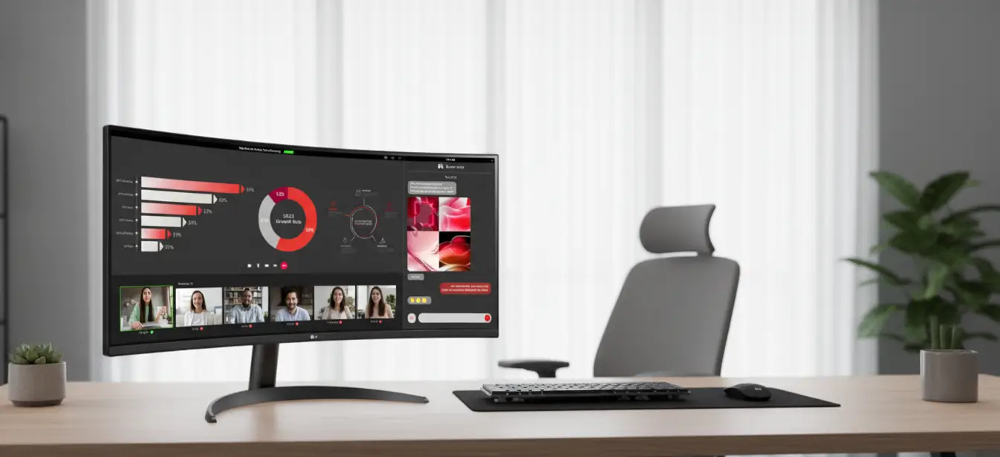

Tecnología
Monitor LG Ultra Wide Curvo 34" (100Hz)
Un monitor panorámico puede dar más espacio a documentos y ventanas en paralelo. Para un escritorio de trabajo, el ancho es parte central de la decisión.
Antes de elegir: Monitor LG Ultra Wide Curvo 34" (100Hz)
Confirma modelo, resolución, entradas y dimensiones con base. La compatibilidad con tu equipo no se deduce solo del tamaño.
Precio y disponibilidad en tienda · Abre otra pestaña